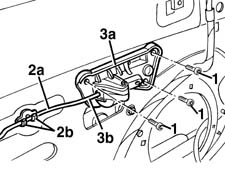
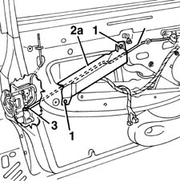

7005C50 front side door interior opening mechnism r-r for repair or replacement with door panel removed
- Path
- Procedures > 70 FITTINGS > 7005 PASSENGER COMPARTMENT FRONT SIDE DOORS > 7005C front lock controls > 7005C50 front side door interior opening mechnism r-r for repair or replacement with door panel removed
- Kind
- repair procedure (removal / refitting; the operation number is the code)
- Applies to
- all engines; all production periods
- Interactive page
- https://sloeber94.github.io/elrnDB-fMltpl/en/#/2892025
Applies to: all engines; all production periods
 Removing
Removing
 Refitting
Refitting7005A04 front side door water guard protection - r r or replace with door panel removed
1. Undo the bolts.
2. Disconnect the linkage (2a) from the retainer (2b).
3. Disconnect the relay (3a) from the end (3b) of the linkage.

Applies to: all engines; all production periods
1. Undo the bolts.
2. Disengage the bracket (2a) from the opening intermediate control device (2b) and remove it.
3. Disconnect the linkage from the lock and save it.

Applies to: all engines; all production periods
Refitting
RemovingCheck that the linkage and intermediate control are not damaged.
Connect the linkage to the lock.
Engage the opening intermediate control to the bracket, then fit the bracket.
Tighten the bolts.
Connect the intermediate control to the end of the linkage.
Connect the linkage to the retainer.
Fit the intermediate control and tighten the bolts.
7005A04 front side door water guard protection - r r or replace with door panel removed
Test to check the interior handle and catch are working properly.